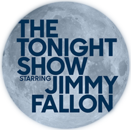

An American late-night talk show hosted by actor and comedian Jimmy Fallon that airs on NBC. The show premiered on February 17, 2014, and is produced by Broadway Video and Universal Television. It is the seventh incarnation of NBC's long-running Tonight Show franchise, with Fallon serving as the sixth host. The show also stars sidekick and announcer Steve Higgins and house band The Roots. The Tonight Show is produced by Katie Hockmeyer and executive-produced by Lorne Michaels. The show records from Studio 6B in Rockefeller Center, New York City, which is the same studio in which Tonight Starring Jack Paar and then The Tonight Show Starring Johnny Carson were produced from 1957 until 1972.

An American radio show hosted by Howard Stern that gained wide recognition when it was nationally syndicated on terrestrial radio from WXRK in New York City, between 1986 and 2005. The show has aired on Howard 100 and Howard 101, Stern's two uncensored channels on the subscription-based satellite radio service SiriusXM, since 2006. Other prominent staff members include co-host and news anchor Robin Quivers, writer Fred Norris and executive producer Gary Dell'Abate, along with former members Jackie Martling, Billy West, John Melendez, and Artie Lange.
Stern began his radio career in the mid-1970s and developed his show through morning positions at WRNW in Briarcliff Manor, New York, WCCC-FM in Hartford, Connecticut, and WWWW in Detroit. In 1981, he began at WWDC-FM in Washington, D.C., where he was first paired with Quivers and became a ratings success. That was followed by three years at WNBC in New York City. After his abrupt firing, Stern moved to WXRK where he remained for 20 years until December 2005. During this time, The Howard Stern Show was syndicated to 60 radio markets and gained an audience of 20 million listeners at its peak. In the New York area, it was the highest-rated morning radio program from 1994 to 2001. The show is also the most fined, after a total of $2.5 million in fines were issued by the Federal Communications Commission for indecent material. In 2004, Stern signed the first of several five-year contracts with Sirius; the first was reportedly worth $500 million.
A French animated television series created by Jean-Yves Raimbaud for Gaumont Multimedia and Xilam Animation. The series chronicles the exploits and adventures of Oggy, a blue cat whose life is constantly interrupted by three cockroaches – Dee Dee, Marky, and Joey respectively – who love to cause mischief within his home. The show employs silent comedy: characters either do not speak or use unintelligible vocalizations and gestures. The show premiered in September 1998 on France 3, and later expanded internationally. The series ended in January 2019, having released seven seasons in over two decades.
In September 2020, a reboot series was announced, entitled Oggy and the Cockroaches: Next Generation, in which Oggy takes care of Piya, a young elephant from India. It was released worldwide on Netflix on 28 July 2022. Although it differs noticeably from the original in terms of its visuals and tone, Gulli labels it as Oggy's eighth season.
The National Basketball Association (NBA) is a professional basketball league in North America composed of 30 teams (29 in the United States and 1 in Canada). It is one of the major professional sports leagues in the United States and Canada and is considered the premier professional basketball league in the world.
The league was founded in New York City on June 6, 1946, as the Basketball Association of America (BAA). It changed its name to the National Basketball Association on August 3, 1949, after merging with the competing National Basketball League (NBL). In 1976, the NBA and the American Basketball Association (ABA) merged, adding four franchises to the NBA. The NBA's regular season runs from October to April, with each team playing 82 games. The league's playoff tournament extends into June, culminating with the NBA Finals championship series. As of 2020, NBA players are the world's best paid athletes by average annual salary per player.